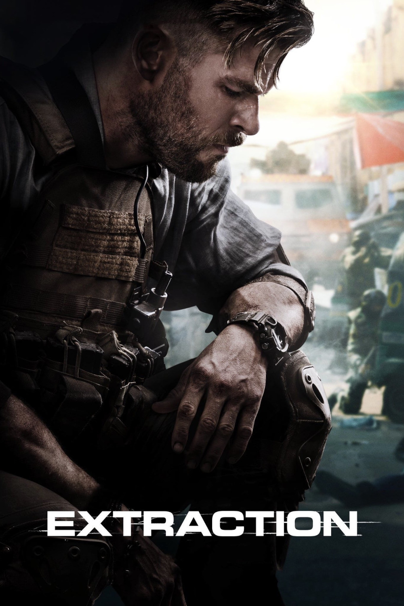

Мировая премьера: 24 апреля 2020
Слоган: Когда кончается задание, начинается искупление.
Сюжет: И без того непростая миссия наёмника превращается в отчаянную борьбу за жизнь, когда его отправляют в Бангладеш спасти похищенного сына наркобарона.
Режиссёр: Сэм Харгрейв
В основе: Комикс "Сьюдад" (США, 2014, авторы – Анде Паркс, Джо Русс и Энтони Русо)
Серия: Тайлер Рейк
В ролях:
| Крис Хемсворт | Тайлер Рейк |
| Рудракш Джайсвал | Ови Махаджан |
| Дэвид Харбор | Гаспар |
| Рандип Худа | Саджу Рав |
| Голшифте Фарахани | Ник Хан |
| Прияншу Пайнюли | Амир Асиф |
| Панкадж Трипати | Ови Махаджан ст. |
| Адам Бесса | Яз Хан |
Бюджет: $ 65 млн.
Продолжительность: 1 ч. 43 мин.
Рейтинг: 6.8